2026년 행정사무감사 질의서 (발언용 · 5분) — 집행부 2일차
의료관광 협력사업비, 도는 '적정'을 어떻게 확인했나
— 정산기한 뒤 4,442만 원, 원 단위로 맞춘 잔액, 현금과 자체 확인서
문화체육관광위원회 황은화 위원 → 문화체육관광국장(관광산업과)
| ① 정산기한 뒤 19.3% | 협약은 "11월 말까지 정산서 제출·잔액 반납". 12월에 33건 44,420,319원 집행, 공사 답은 "상호 협의" 한 줄 → 도는 협회가 낸 정산보고서로 "정산 검증 갈음" |
| ② 원 단위로 맞춘 마지막 지출 | 243~248번 6건 8,126,449원. 같은 키링을 세 번 나눠 사서 항목 잔액 0원, 이자 4,193원까지 소진 → 견적서는 결제액에 맞춘 "절사", 244·245번은 2026년에야 사용 |
| ③ 현금과 자체 확인서 | 해외 경비 4건 7,092,624원 — 현금 인출, 협회 자기 계좌 이체, 두 달 뒤 환전 → 증빙은 협회 서식 확인서·서명 없는 영수증(2026.10.1. 생성). 협약 제4조③ 불충족 |
※ 의원실 메모 (발언 제외) · 이미정 위원 의료관광 질의(실적·위탁구조·몽골 출장)와 같은 사업이다. 황은화 위원 질의는 정산 증빙에 한정한다. · 몽골 출장 현금(159·246번, 질문 3)은 사전에 의원실 간 조정이 필요하다. 조정 결과에 따라 질문 3은 15·209번 중심으로 줄일 수 있다. · 수령인·직원 성명, 카드·계좌번호, 이력서 등 개인정보는 근거자료에서 가렸고 발언에서도 언급하지 않는다. |
※ 발언 중 [근거 n] 표시는 맨 뒤 「근거자료」 번호입니다.
■ 발언 — 도입
국장님, 경기관광공사 출연금 가운데 의료관광 활성화 사업에 대해 묻겠습니다.
2025년 도는 공사 출연금에 이 사업 3억 원을 편성했습니다. 공사는 이 가운데 2억 3천만 원을 (사)경기국제의료협회에 "협력사업비"로 넘겼습니다. [근거 1]
공사와 협회가 맺은 협약은 분명합니다. 협력사업비는 별도 통장으로 관리하고, 11월 말까지 카드전표·세금계산서·계좌이체 증빙을 붙인 정산서를 내고, 남은 돈은 반납하라고 했습니다.
그런데 협회 통장을 한 줄씩 따라가 보니, 정산기한 뒤에 쓴 돈, 잔액을 0원으로 맞춘 지출, 현금과 자체 서식으로 끝난 해외 경비가 나옵니다. 도 답변서는 이 사업의 정산 검증을 협회가 낸 정산보고서로 "갈음"했다고 적었습니다. [근거 5]
오늘은 도가 '적정'을 무엇으로 확인했는지, 세 가지를 묻겠습니다.
▶ 질문 1. 정산기한 뒤 19.3%
협약서 제4조 제3항은 "11월 말까지" 정산서를 내고 잔액은 반납하라고 정했습니다. 공사가 직접 만든 추진계획에도 "협력사업비 정산 및 잔액 반납, 11월 말"이라고 적혀 있습니다. [근거 1] [근거 2]
협회 통장을 보면 12월 1일부터 26일까지 33건, 44,420,319원이 나갔습니다. 협력사업비의 19.3%입니다. [근거 3]
기한연장 공문을 요구했습니다. 공사 답은 한 줄입니다. "상호 협의하에 정산기한 이후에도 사업 추진." 협약 제4조 제2항은 사업내용을 바꿀 때 공문으로 조정하라고 했는데, 공문은 없습니다. [근거 4]
도는 어땠습니까. 성과평가와 정산 검증을 협회가 낸 정산보고서로 "갈음"했다고 답했습니다. 협회가 쓴 돈을 협회 보고서로 확인한 것입니다. [근거 5]
국장님, 도는 정산기한 뒤 4,442만 원이 쓰인 사실을 언제 알았고, 그 33건에 대해 무엇을 확인했습니까?
▷ "협약상 사업기간이 12월 31일까지라 12월 집행은 가능하다"
→ 사업기간과 정산기한은 다른 조항입니다. 제2조는 사업기간, 제4조 제3항은 11월 말 정산·잔액 반납입니다. 바꾸려면 제4조 제2항대로 공문이 있어야 합니다. 그 공문, 있습니까? [근거 1]
▷ "공사가 정산을 받아 검토했고, 도는 공사를 통해 확인했다"
→ 도 답변서에는 "협회 정산보고서로 갈음"이라고 적혀 있습니다. 공사 정관 제61조는 민간위탁에 도지사 승인을 받게 합니다. 승인한 도가 정산은 확인하지 않은 것입니다. 공사의 정산 검토 결과 문서가 있다면 제출해 주십시오. [근거 5]
▶ 질문 2. 남은 돈을 원 단위까지 맞춘 마지막 지출
마지막 여섯 건을 보겠습니다. 통장 243번부터 248번까지, 8,126,449원입니다. [근거 7]
12월 19일 오전 10시 35분, 협회는 수원의 한 가게에서 아크릴 키링을 58,620원어치 삽니다. 그 순간 팸투어 항목 집행액이 정확히 4,500만 원, 예산과 같아집니다. [근거 7] [근거 8]
12월 26일 오전 10시 00분 15초, 같은 가게에서 같은 키링을 40,829원. 30초 뒤 10시 00분 45초, 또 60,535원. 앞의 것은 홍보물 항목, 뒤의 것은 해외세일즈 항목에 나눠 붙였습니다. 결제가 끝나자 두 항목 모두 원 단위까지 잔액이 0이 됩니다. 이자 4,193원까지 다 썼습니다. [근거 7] [근거 8]
결과보고서의 예산표 이름은 "(4차) 당초예산"입니다. 네 번 고친 예산이 집행액과 한 푼도 다르지 않습니다. [근거 6]
견적서도 봤습니다. 단가 3,500원에 수량을 곱한 뒤 "절사"라는 줄로 880원, 1,171원을 뺐습니다. 248번은 오히려 535원을 더했고, 그 견적 63,535원은 실제 결제 60,535원과도 다릅니다. 243번 견적서는 계좌이체 조건인데 실제로는 카드로 냈고, 협회 사용내역서에는 사용일자가 11월 18일로 적혀 있습니다. 견적이 물건값을 정한 것이 아니라, 결제할 금액에 견적을 맞춘 것으로 보입니다. [근거 7] [근거 9]
같은 결의서로 처리한 244번 도자기 키링 30개는 2026년 4월 우즈베키스탄에서 전량 배부됐습니다. 12월 22일 660만 원을 지급한 245번 홍보영상은 2026년 4월과 5월에만 쓰였습니다. 결의서 결재는 돈을 쓴 뒤인 12월 22일과 26일에 났습니다. [근거 10] [근거 11]
도는 이 여섯 건이 2025년 사업에 실제로 필요한 지출이었는지 확인했습니까? 잔액 반납을 피하려는 소진성 집행으로 보이지 않습니까?
▷ "기념품으로 필요한 수량을 구입했을 뿐이다"
→ 필요한 수량이었다면 세 번 나눠 살 이유가 없습니다. 30초 간격 두 장의 영수증이 각각 다른 항목 잔액과 원 단위까지 맞는 것을 우연으로 보십니까? [근거 7] [근거 8]
▷ "244·245번은 2025년에 계약·제작했고, 활용이 2026년일 뿐이다"
→ 협약 사업기간은 2025년 12월 31일까지입니다. 2026년 행사에 쓸 물품이면 2026년 협력사업비 2억 5천만 원으로 사야 합니다. 2026년 사업비에 같은 성격의 기념품·영상 비용이 또 잡혀 있지 않은지도 함께 확인해 주십시오. [근거 11]
▶ 질문 3. 현금과 자체 확인서로 끝난 해외 경비
해외 경비 네 건, 7,092,624원입니다. [근거 12]
15번, 카자흐스탄 통역비입니다. 통장에서 나간 돈은 통역사가 아니라 "사단법인 경기국제의…", 협회 자기 명의 계좌로 들어갔습니다. [근거 13]
159번, 몽골 행사비 3천 달러입니다. 출장 전날 현금으로 찾아 환전했습니다. 결의서는 출장 3주 뒤에야 결재됐고, 그때 첨부는 견적서·환전영수증·인출액 정리뿐입니다. 이번에 낸 현지 "영수증"은 업체 서명도 직인도 없는 엑셀 양식이고, 본문에는 "견적을 제공한다"는 문구가 그대로 남아 있습니다. PDF를 만든 날은 2026년 10월 1일, 사업이 끝나고 아홉 달 뒤입니다. [근거 14] [근거 15]
209번, 우즈베키스탄 1,200달러는 11월 25일 출금했고, 증빙은 협회 서식 지급확인서 세 장이 전부입니다. 246번, 몽골 통역비 500달러는 확인서상 지급일이 10월 24일인데, 통장에서 돈이 나간 것은 두 달 뒤 12월 26일입니다. 그 사이 누가 무슨 돈으로 먼저 줬는지 서류에 없습니다. [근거 16]
협약 제4조 제3항이 정한 증빙은 카드전표, 세금계산서, 계좌이체 증빙입니다. 네 건 어디에도 해당하지 않습니다. [근거 1] [근거 12]
도는 이 네 건을 적정한 증빙으로 인정한 것입니까? 인정할 수 없다면 환수를 검토했습니까?
▷ "해외 현지에서는 카드·이체가 어려워 현금 지급이 불가피했다"
→ 불가피했다면 그 사정을 공문으로 협의하고, 현지 업체의 서명 영수증이라도 받았어야 합니다. 지급확인서는 돈을 준 협회가 만든 서식입니다. 공사가 현금 지급을 사전에 승인한 문서가 있습니까? [근거 14] [근거 16]
▷ "통역비는 행사별로 다른 용역이다"
→ 몽골 출장 통역비가 177번 송금 인보이스(사회·만찬 통역 500달러), 159번 영수증(가이드·통역 800달러), 246번(500달러) 세 곳에 있습니다. 날짜·통역 장면별로 겹치지 않는다는 자료를 내 주십시오. [근거 15] [근거 16]
■ 마무리 · 요구사항
국장님, 정산기한, 잔액 반납, 증빙의 종류까지 협약에 다 적혀 있었습니다. 지켜지지 않았는데 도의 확인은 "협회 보고서로 갈음"이었습니다. 이 사업은 2026년에도 같은 협회에 2억 5천만 원이 나가고 있습니다. 같은 방식이 되풀이되지 않도록 도가 직접 챙겨 주십시오.
하나, 2025년 협력사업비 중 정산기한 이후 33건과 현금성 해외 경비 4건의 증빙을 도가 직접 다시 점검하고, 협약 제4조 제3항에 맞지 않는 집행은 환수 여부를 판단해 2026년 12월 31일까지 보고해 주십시오.
둘, 244·245번처럼 2026년에 쓰인 물품·용역을 2025년에 계상한 경위와, 2026년 협력사업비에 같은 항목이 중복 편성·집행되지 않았는지 확인 결과를 2027년 첫 임시회 전까지 제출해 주십시오.
셋, 출연금 재배분 사업의 정산 지침을 마련해 주십시오. 정산기한 변경은 공문으로만 하고, 사후 수정이 가능한 견적서와 자체 서식 확인서는 증빙으로 인정하지 않으며, 공사의 정산 검토 결과를 도에 보고하도록 — 2027년 협약 체결 전까지 마련해 주십시오.
■ 참고 · 감사 중 추가 요구자료
· 11.30. 이후 33건에 대한 공사의 사전 승인·협의 문서(일자 포함)와 공사의 2025년 정산 검토 결과 결재문서
· 244번 「[견적서]_도자기키링_251217」·세금계산서·이체내역 원본, 245번 홍보영상 납품·검수 확인서(검수일 명시)
· 2026년 협력사업비 집행 내역 중 기념품·홍보물·영상 항목(2026.1.~현재)
· 몽골 출장 통역 일정표(날짜·장면별) — 177번 인보이스·159번·246번 통역비 대조용
근 거 자 료
빨간 상자·번호는 발언에서 짚는 부분입니다. 개인 성명·카드·계좌번호는 회색으로 가렸습니다. "원문 재현"은 한글(hwpx)·엑셀 원문을 그대로 옮겨 표시한 것이고, "의원실 산출"은 원자료로 계산한 값입니다.
▶ 질문 1 관련
근거 1. 2025 업무협약서 — 사업기간 12.31., 정산·잔액 반납 "11월 말" 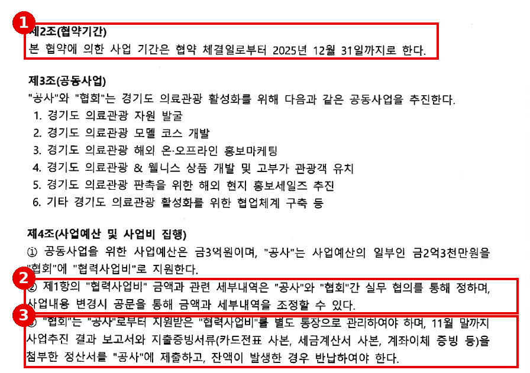
※ 출처: 경기관광공사 제출 (별첨 4) 「업무협약서(경기관광공사-경기국제의료협회)(2025, 2026)」 1쪽 (스캔본) |
근거 2. 공사 「2025 경기도 의료관광 활성화 사업 추진 계획(안)」 — 정산 일정 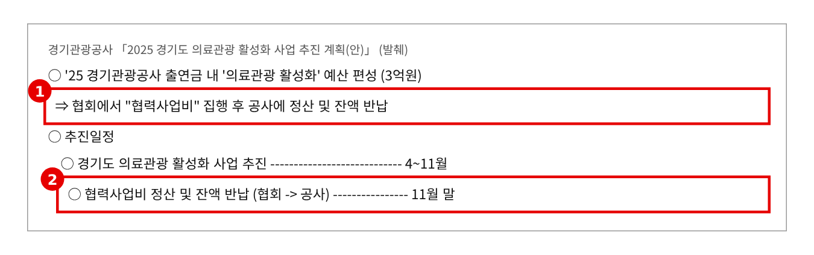
※ 출처: 경기관광공사 제출 (별첨 1) 「2025 경기도 의료관광 활성화 사업 추진 계획(안)」 (원문 재현, 발췌) |
근거 3. 협회 통장 — 정산기한(11.30.) 이후 집행 33건 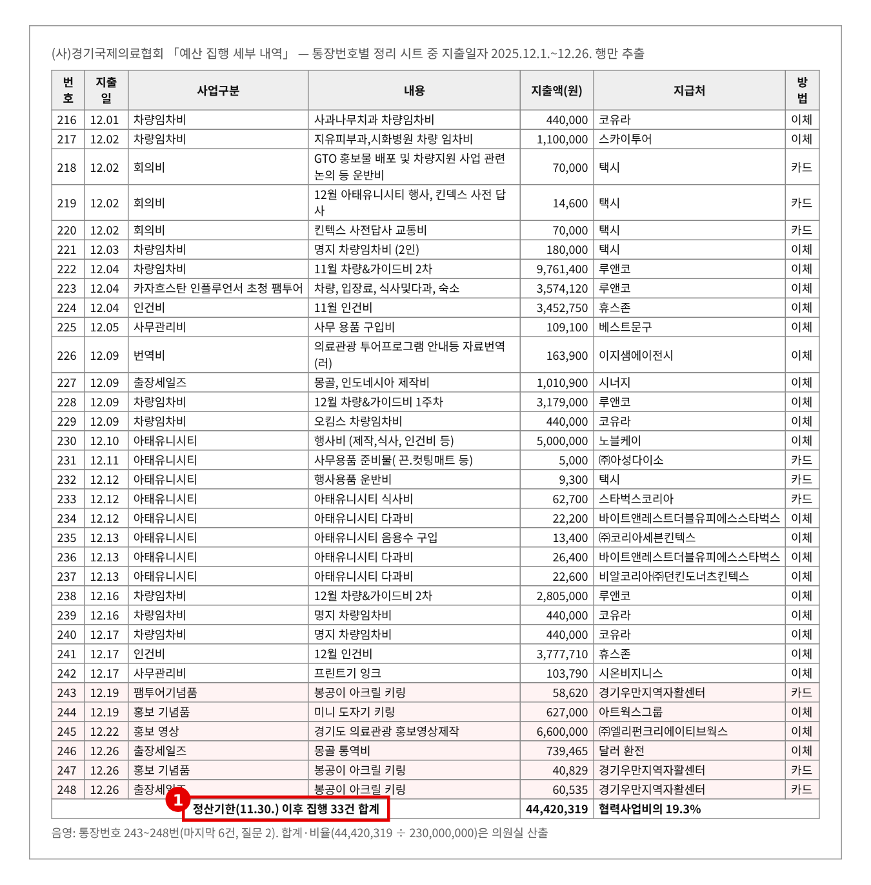
※ 출처: 경기관광공사 행정사무감사 제출 USB 원본(1102) 「의료관광」 폴더 「예산 집행 세부 내역.xlsx」 통장번호별 시트 (원문 재현, 해당 행 추출). 합계·비율은 의원실 산출 |
근거 4. 공사 답변 — 기한 뒤 집행 사유는 "상호 협의" 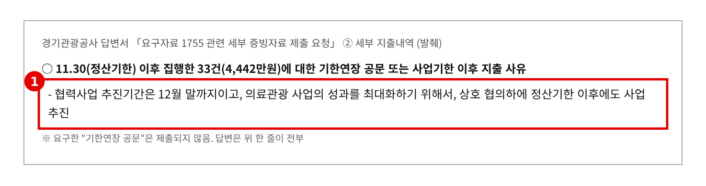
※ 출처: 경기관광공사 답변서 「요구자료 1755 관련 세부 증빙자료」 추가자료(이미정 의원실 요구분) ② 세부 지출내역 (원문 재현, 발췌) |
근거 5. 관광산업과 답변 — 정관 제61조, 정산 검증 "갈음" 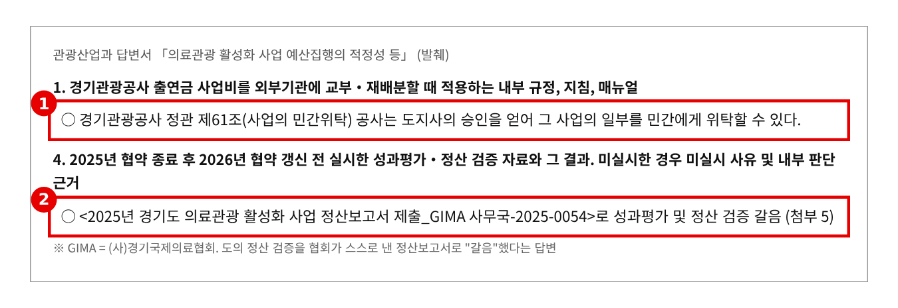
※ 출처: 관광산업과 답변서 「의료관광 활성화 사업 예산집행의 적정성 등」(이미정 의원 요구) 1·4번 (원문 재현, 발췌) |
▶ 질문 2 관련
근거 6. 협회 결과보고서 6쪽 — "(4차) 당초예산" = 집행액 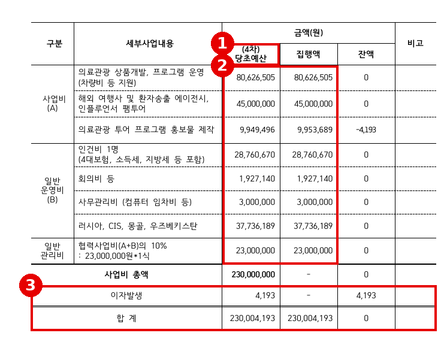
※ 출처: (사)경기국제의료협회 「2025 경기도 의료관광 활성화 사업 추진 결과보고서」(별첨 5-2) 6쪽 「예산집행결과」 |
근거 7. 마지막 6건(243~248번)과 항목 잔액 — 의원실 산출 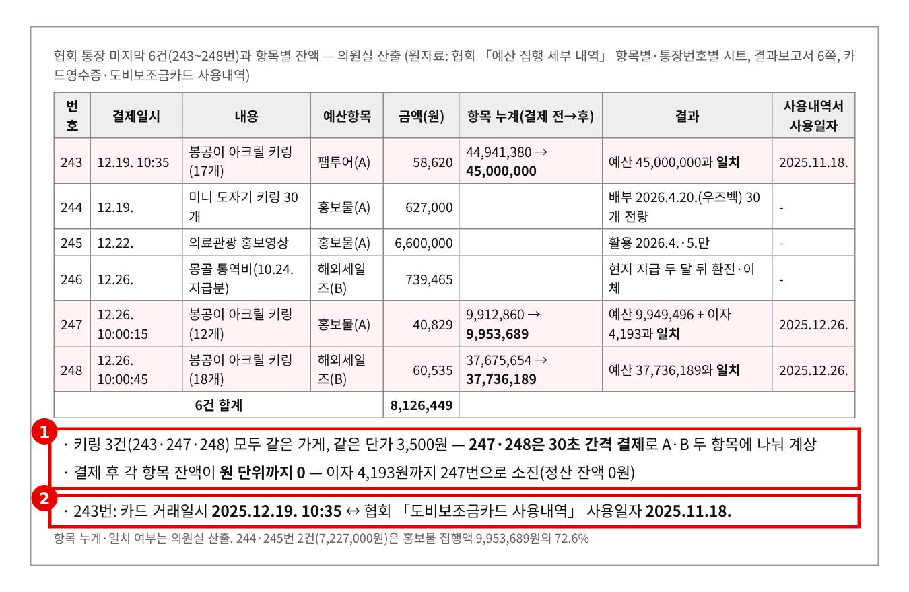
※ 출처: 경기관광공사 행정사무감사 제출 USB 원본(1102) 「의료관광」 폴더 「예산 집행 세부 내역.xlsx」(항목별·통장번호별), 결과보고서 6쪽, 경기관광공사 답변서 「요구자료 1755 관련 세부 증빙자료」 추가자료(이미정 의원실 요구분) 첨부 2-1~2-3 영수증(hwp). 누계·일치 여부는 의원실 산출 |
근거 8. 카드영수증 3장 — 243번(12.19. 10:35:29) · 248번(12.26. 10:00:45) · 247번(12.26. 10:00:15) 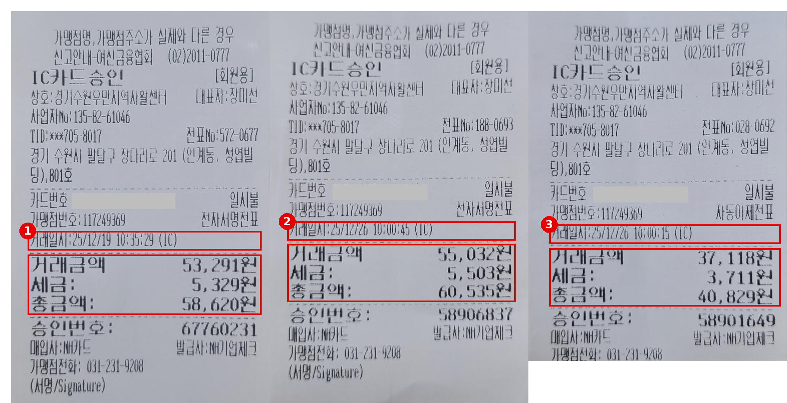
※ 출처: 경기관광공사 답변서 「요구자료 1755 관련 세부 증빙자료」 추가자료(이미정 의원실 요구분) 첨부 2-1·2-2·2-3 「영수증」(hwp 내 이미지). 카드번호 가림 |
근거 9. 견적서 3장 — 결제액에 맞춘 "절사" 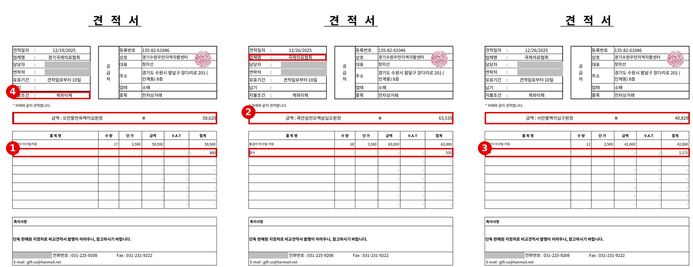
※ 출처: 경기관광공사 답변서 「요구자료 1755 관련 세부 증빙자료」 추가자료(이미정 의원실 요구분) 첨부 2-1·2-2·2-3 「견적서」(xlsx, 화면 변환). 담당자 성명·휴대전화 가림 |
근거 10. 243~244번 지출결의서 — 결제 뒤 결재 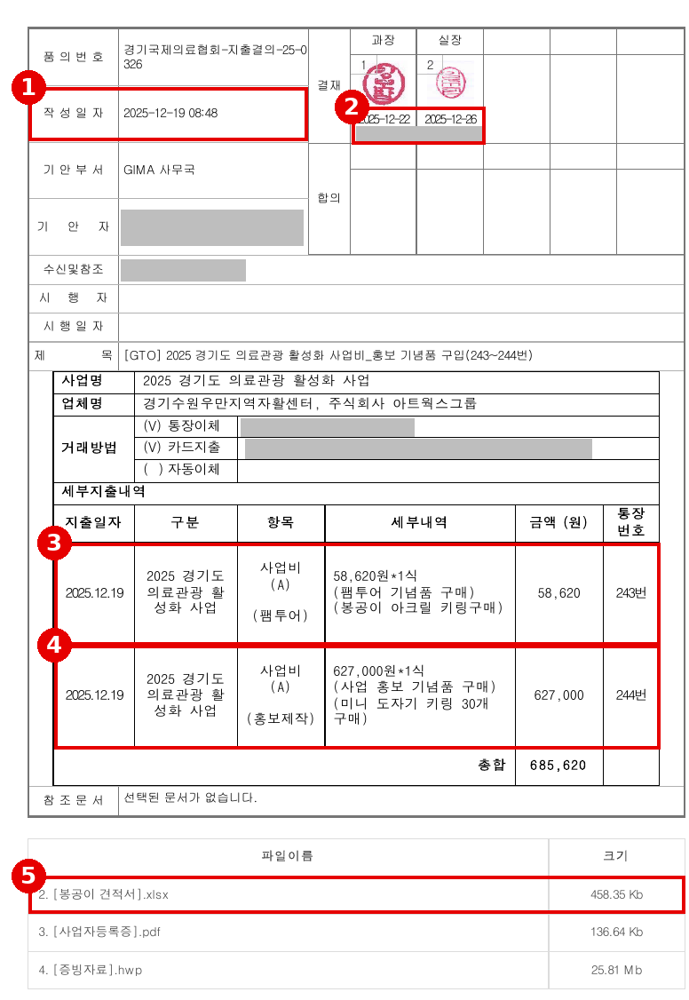
※ 출처: 경기관광공사 답변서 「요구자료 1755 관련 세부 증빙자료」 추가자료(이미정 의원실 요구분) 첨부 2-4 「지출결의서」(협회 전자결재 출력, 2026.10.7.) 1쪽. 직원 성명·카드·계좌번호 가림 |
근거 11. 공사 답변 — 244번 키링·245번 영상은 2026년에 사용 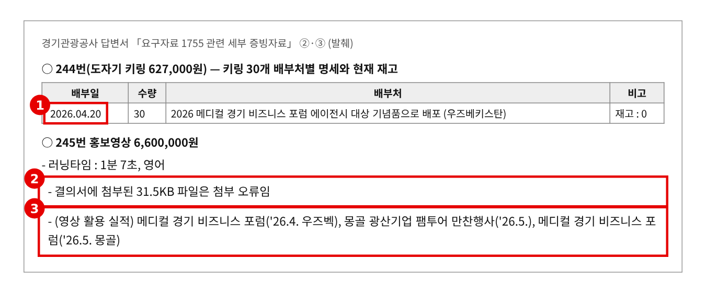
※ 출처: 경기관광공사 답변서 「요구자료 1755 관련 세부 증빙자료」 추가자료(이미정 의원실 요구분) ②·③ (원문 재현, 발췌) |
▶ 질문 3 관련
근거 12. 현금·자기계좌 이체로 처리된 해외 경비 4건 — 의원실 정리 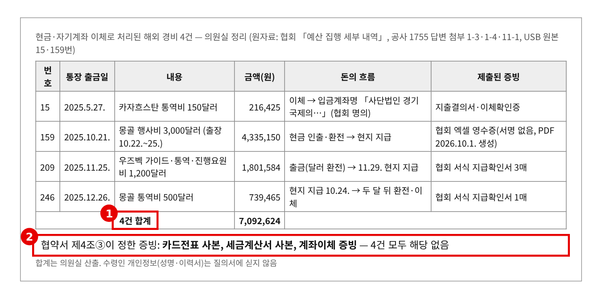
※ 출처: 경기관광공사 행정사무감사 제출 USB 원본(1102) 「의료관광」 폴더 「예산 집행 세부 내역.xlsx」, 15·159번 폴더, 경기관광공사 답변서 「요구자료 1755 관련 세부 증빙자료」 추가자료(이미정 의원실 요구분) 첨부 1-3·1-4·11-1. 합계는 의원실 산출 |
근거 13. 15번 이체확인증 — 협회 계좌에서 협회 계좌로 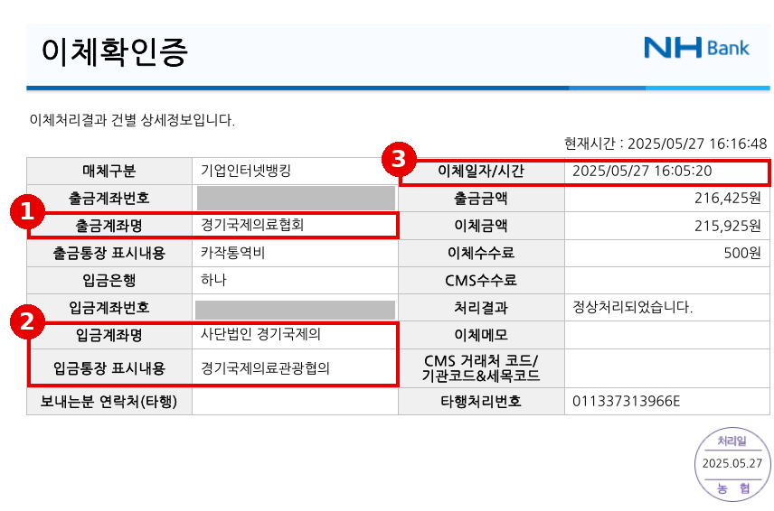
※ 출처: 경기관광공사 행정사무감사 제출 USB 원본(1102) 「의료관광」 폴더 「[통장번호 15번] 216,425원_카작통역비_150달러」 2. [이체내역].pdf. 계좌번호 가림 |
근거 14. 159번 지출결의서 — 현금 3천 달러, 결재는 3주 뒤 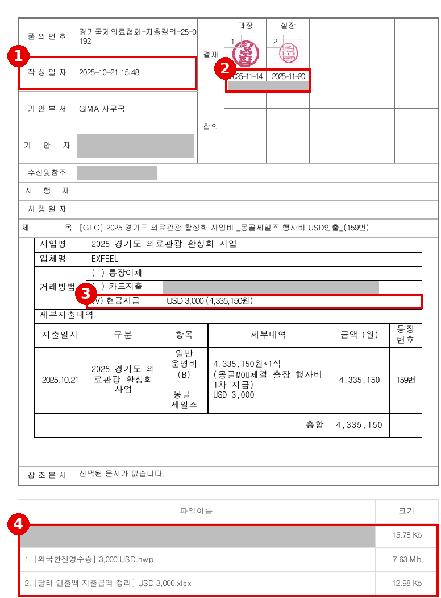
※ 출처: 경기관광공사 행정사무감사 제출 USB 원본(1102) 「의료관광」 폴더 「[통장번호 159번] 4,335,150원 몽골 세일즈 달러환전_행사비 3,000$ (견적서등 서류 보완필요)」 0. [지출결의서].pdf. 직원 성명·카드번호·견적서 파일명 가림 |
근거 15. 159번 "영수증"(첨부 1-3)·177번 인보이스(첨부 1-2) 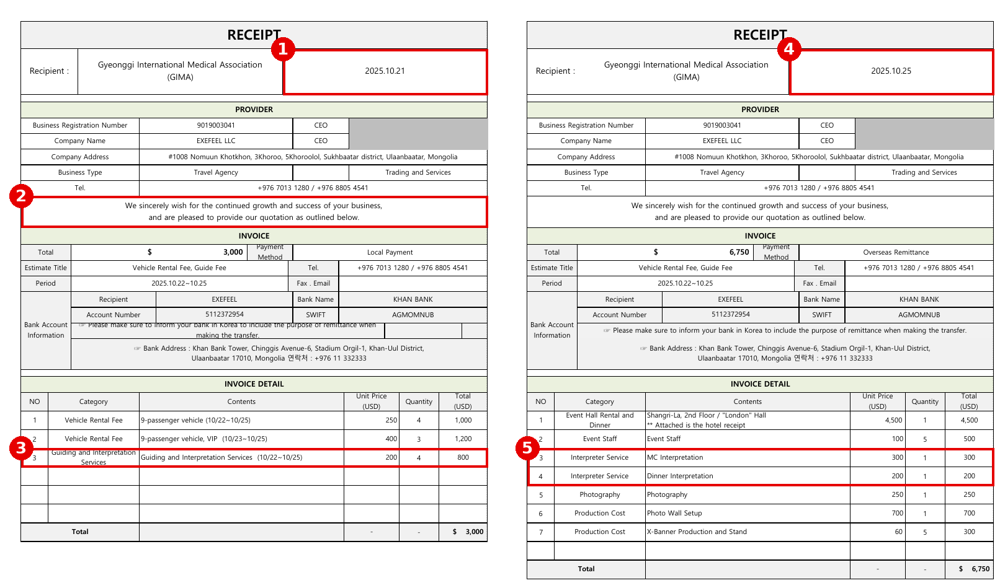
※ 출처: 경기관광공사 답변서 「요구자료 1755 관련 세부 증빙자료」 추가자료(이미정 의원실 요구분) 첨부 1-3 「영수증(3,000달러)」, 첨부 1-2 「인보이스」. 현지 업체 대표 성명 가림 |
근거 16. 지급확인서 — 246번(10.24. 지급) · 209번(11.29. 지급) 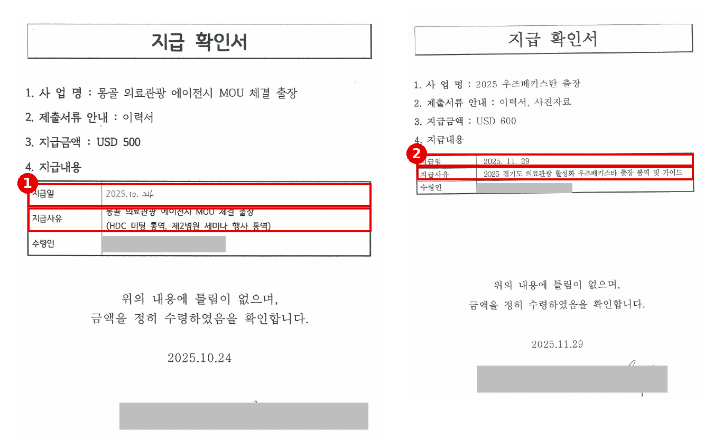
※ 출처: 경기관광공사 답변서 「요구자료 1755 관련 세부 증빙자료」 추가자료(이미정 의원실 요구분) 첨부 1-4 「지급확인서_통역비 500달러」, 첨부 11-1 「지급확인서」 1쪽 |